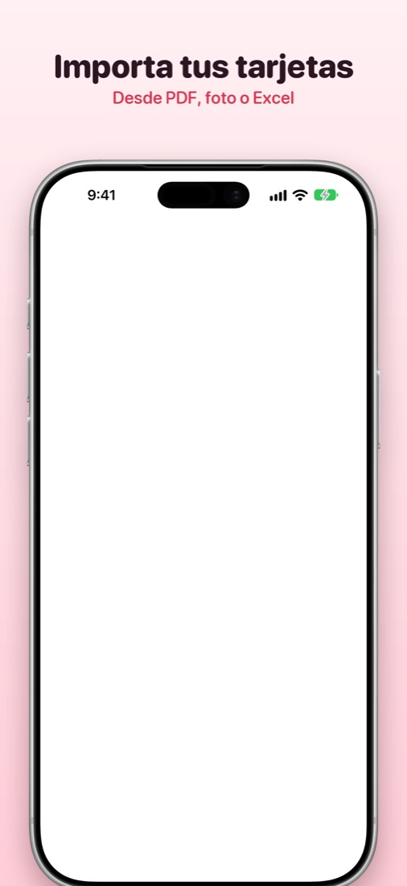
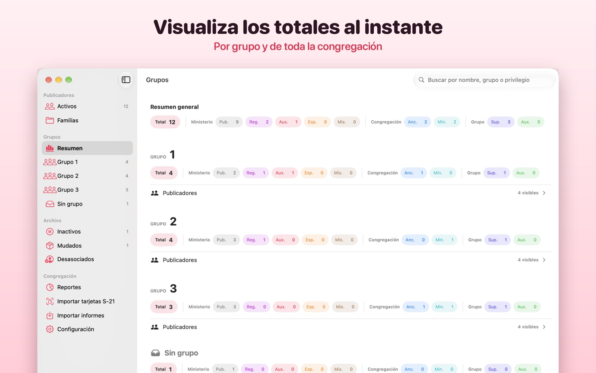
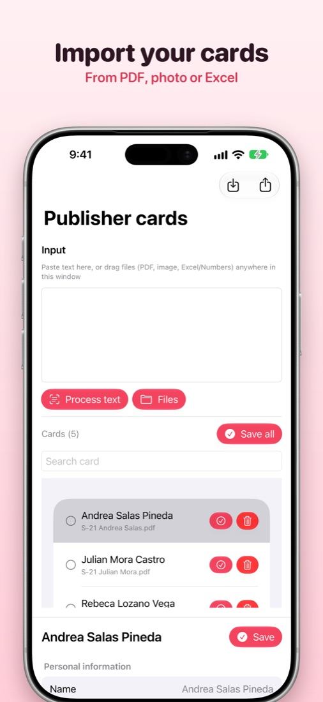
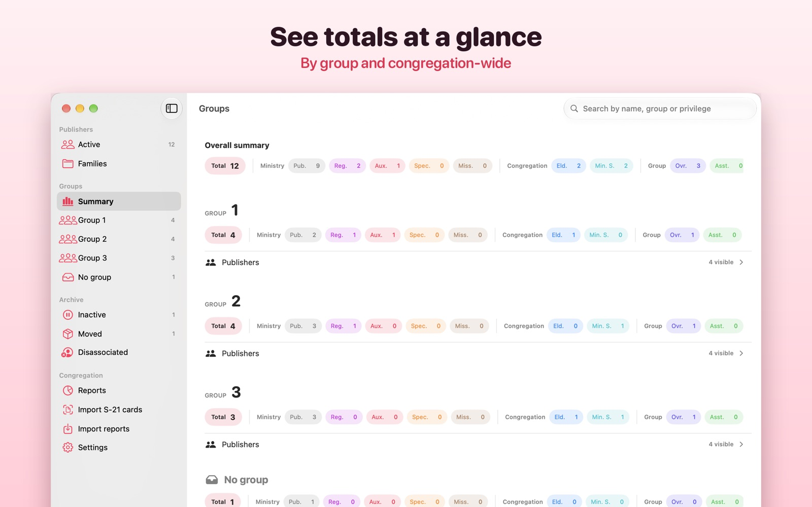

Importa tus tarjetas
Lee tarjetas desde PDF, fotos, Excel o Numbers. El texto se reconoce en tu dispositivo y revisas cada borrador antes de guardarlo.
Baruch para iPhone, iPad y Mac
Importa tarjetas de publicador desde PDF, foto o Excel, consulta los totales por grupo y genera los informes del mes. Todo se queda en tus dispositivos y en tu iCloud privado.
Gratis · iPhone, iPad y Mac · Español e inglés
Vistazo


Funciones
Lee tarjetas desde PDF, fotos, Excel o Numbers. El texto se reconoce en tu dispositivo y revisas cada borrador antes de guardarlo.
Importa los informes mensuales desde una hoja de cálculo y genera la plantilla del mes lista para enviar.
Totales por grupo y de toda la congregación, con publicadores activos, inactivos y mudados.
Exporta las tarjetas S-21 y la lista de cada grupo en PDF para imprimir o archivar.
Horas, cursos bíblicos y privilegios mes a mes, con sus documentos adjuntos.
Sincroniza entre iPhone, iPad y Mac con tu iCloud privado y crea respaldos completos cuando quieras.
Privacidad
Baruch es una herramienta independiente. No está afiliada ni respaldada por ninguna organización religiosa.
Aviso de privacidad
Última actualización: 28 de octubre de 2026
Baruch ayuda al secretario de congregación a llevar las tarjetas de publicador, los informes mensuales y los grupos. Este aviso explica qué información usa la app, dónde se guarda y qué control tienes sobre ella.
En resumen: Baruch no tiene cuentas de usuario ni servidores propios. Los datos se guardan en tus dispositivos y en tu iCloud privado. El desarrollador no puede verlos, no los vende y no los usa para publicidad. La app no incluye rastreo ni analítica de terceros.
El responsable de este aviso es Francisco Misael Landero Ychante ("el desarrollador"). Contacto: hola@misaellandero.com.
La app guarda solo lo que decides registrar o importar: datos de publicadores (por ejemplo nombre, fechas de nacimiento y bautismo, grupo, privilegios, teléfono y contacto de emergencia), informes mensuales de actividad, familias, notas y documentos adjuntos como PDF o imágenes.
Cuando importas un PDF, una foto o una hoja de cálculo, el texto se reconoce con Vision y se interpreta con los modelos de Apple Intelligence que funcionan en tu dispositivo. Ni los documentos ni el texto se envían al desarrollador ni a servicios de terceros. Nada se guarda hasta que revisas y confirmas el borrador.
Solo si lo autorizas, Baruch vincula el contacto de emergencia de un publicador con un contacto de tu dispositivo para mantener su nombre y teléfono al día. Puedes retirar el permiso en cualquier momento desde Ajustes.
En Mac, con tu permiso, la app controla Numbers únicamente para convertir a Excel el archivo .numbers que elegiste importar.
Los respaldos (JSON), PDF y hojas de cálculo que exportas son archivos que tú guardas donde elijas. Contienen datos personales de publicadores, así que guárdalos en un lugar seguro.
Baruch guarda datos personales de terceros (los publicadores). Como usuario, eres responsable de tratarlos con cuidado, solo para los fines de tu labor y conforme a las normas de tu congregación y a las leyes de tu país.
Baruch no vende, alquila ni comparte información para publicidad, y no muestra anuncios.
Como tus datos viven en tus dispositivos y en tu iCloud, puedes verlos, corregirlos o borrarlos directamente en la app o en los Ajustes de tu dispositivo. Para cualquier duda escribe a hola@misaellandero.com.
Si este aviso cambia, publicaremos la nueva versión en esta página con su fecha de actualización.
Más sobre privacidad en los servicios de Apple: apple.com/legal/privacy.
Términos de uso
Última actualización: 28 de octubre de 2026
Estos términos son un acuerdo entre tú y Francisco Misael Landero Ychante ("el desarrollador"). Al descargar o usar Baruch también aceptas el Contrato de licencia estándar de Apple (EULA), que aplica junto con estos términos.
Baruch es una herramienta independiente. No está afiliada, patrocinada ni respaldada por ninguna organización religiosa. Los formularios y plantillas se reproducen solo para facilitar el trabajo del secretario.
Baruch es gratuita y no requiere cuenta. Úsala de forma lícita y respetando la privacidad de las personas cuyos datos registras.
El reconocimiento de texto y Apple Intelligence pueden equivocarse. Confirma siempre los datos importados, los totales y los informes antes de enviarlos o archivarlos.
Eres responsable de lo que guardas en la app y de conservar tus respaldos. El desarrollador no tiene acceso a tus datos y no puede recuperarlos si se pierden.
La app se ofrece "tal cual", sin garantías de ningún tipo. En la medida que lo permita la ley, el desarrollador no es responsable de pérdidas de datos ni de daños derivados del uso de la app.
Podemos actualizar estos términos; la nueva versión se publicará en esta página con su fecha.
Baruch for iPhone, iPad and Mac
Import publisher cards from PDFs, photos or Excel, see totals by group and generate monthly reports. Everything stays on your devices and in your private iCloud.
Free · iPhone, iPad and Mac · English and Spanish
A look inside


Features
Read cards from PDFs, photos, Excel or Numbers. Text is recognized on your device and you review every draft before saving it.
Import monthly reports from a spreadsheet and generate the month's template, ready to send.
Totals by group and for the whole congregation, with active, inactive and moved publishers.
Export S-21 cards and each group's list as PDFs to print or archive.
Hours, Bible studies and privileges month by month, with attached documents.
Sync across iPhone, iPad and Mac with your private iCloud and create full backups whenever you want.
Baruch is an independent tool. It is not affiliated with or endorsed by any religious organization.
Privacy Policy
Last updated: October 28, 2026
Baruch helps the congregation secretary keep publisher cards, monthly reports and groups. This policy explains what information the app uses, where it's stored, and what control you have over it.
In short: Baruch has no user accounts and no servers of its own. Your data is stored on your devices and in your private iCloud. The developer can't see it, doesn't sell it, and doesn't use it for advertising. The app includes no third-party tracking or analytics.
This policy is provided by Francisco Misael Landero Ychante ("the developer"). Contact: hola@misaellandero.com.
The app stores only what you choose to record or import: publisher details (for example name, birth and baptism dates, group, privileges, phone number and emergency contact), monthly activity reports, families, notes, and attached documents such as PDFs or images.
When you import a PDF, photo or spreadsheet, text is recognized with Vision and interpreted with Apple Intelligence models that run on your device. Neither the documents nor their text are sent to the developer or to third-party services. Nothing is saved until you review and confirm the draft.
Only if you allow it, Baruch links a publisher's emergency contact with a contact on your device to keep the name and phone number up to date. You can revoke access at any time in Settings.
On Mac, with your permission, the app controls Numbers only to convert the .numbers file you chose to import into Excel.
Backups (JSON), PDFs and spreadsheets you export are files you save wherever you choose. They contain publishers' personal data, so keep them somewhere safe.
Baruch stores personal data about other people (the publishers). As the user, you are responsible for handling it carefully, only for the purposes of your work, and in line with your congregation's guidelines and your country's laws.
Baruch does not sell, rent, or share information for advertising, and it shows no ads.
Because your data lives on your devices and in your iCloud, you can view, correct, or delete it directly in the app or in your device's Settings. For any questions write to hola@misaellandero.com.
If this policy changes, we'll publish the new version on this page with its update date.
More about privacy in Apple services: apple.com/legal/privacy.
Terms of Use
Last updated: October 28, 2026
These terms are an agreement between you and Francisco Misael Landero Ychante ("the developer"). By downloading or using Baruch you also accept Apple's Standard License Agreement (EULA), which applies together with these terms.
Baruch is an independent tool. It is not affiliated with, sponsored or endorsed by any religious organization. Forms and templates are reproduced only to make the secretary's work easier.
Baruch is free and requires no account. Use it lawfully and respect the privacy of the people whose data you record.
Text recognition and Apple Intelligence can make mistakes. Always confirm imported data, totals and reports before sending or archiving them.
You are responsible for what you store in the app and for keeping your backups. The developer has no access to your data and can't recover it if it's lost.
The app is provided "as is", without warranties of any kind. To the extent permitted by law, the developer isn't liable for data loss or damages arising from use of the app.
We may update these terms; the new version will be published on this page with its date.